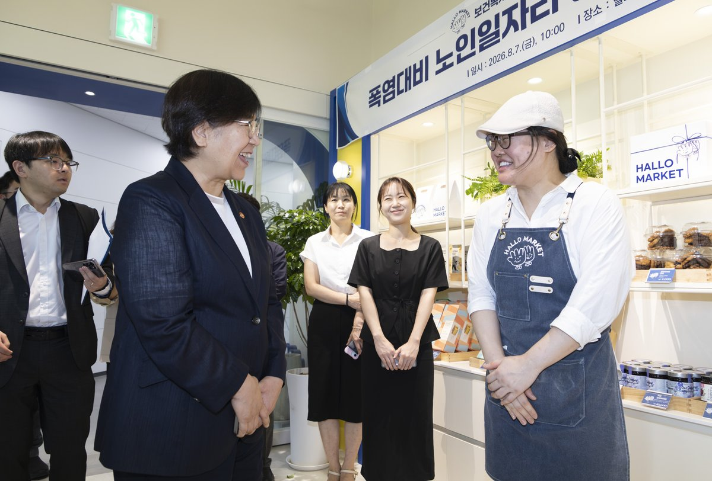
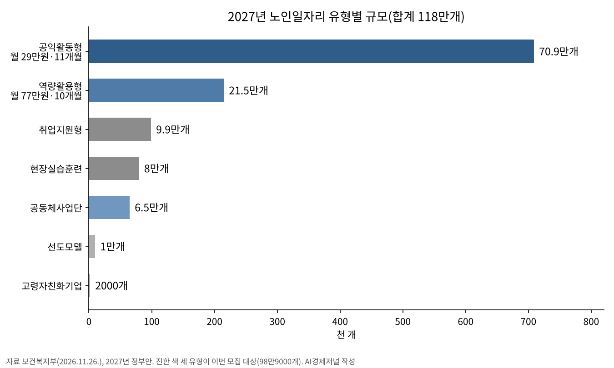

2027년 노인일자리 118만개, 공익활동형 월 29만원
모집 세 유형 98만9000개, 공익활동형은 118만개의 60.1%
인천은 올해 2419억원, 10월 말까지 5만6974명
2027년 일자리 2만8000개, 예산 1270억원 증가
AI경제저널=김갑봉 기자 | 보건복지부가 27일부터 12월 24일까지 2027년 공익활동형·역량활용형·공동체사업단 참여자를 모집하고 있다. 세 유형 일자리는 98만9000개다(AI경제저널 계산).
2027년 전체 노인일자리는 118만개로 역대 최대다. 2025년 109만8000개, 2026년 115만2000개였고 1년 새 2만8000개 늘었다(AI경제저널 계산). 예산은 정부안 2조5121억원으로 올해보다 1270억원 많다(AI경제저널 계산).
수행기관은 소득 수준, 활동 역량과 경력 같은 선발 기준에 따라 점수가 높은 순으로 참여자를 뽑는다. 접수한 수행기관이 12월 중순부터 내년 1월 초 사이에 결과를 개별 통보한다.
공익활동형 70만9000개, 월 29만원

118만개 가운데 공익활동형이 70만9000개다. 전체의 60.1%다(AI경제저널 계산). 기초연금 수급자 등이 대상이다. 참여자는 한 달 30시간 활동하고 월 29만원을 11개월 받는다.
역량활용형은 21만5000개다. 65세 이상(일부 60세 이상)이 경력과 역량을 살려 돌봄·안전·환경 분야에서 일한다. 한 달 60시간에 월 77만원을 10개월 받는다.
공동체사업단은 6만5000개다. 60세 이상이 실버카페 같은 소규모 매장을 함께 운영하고, 참여자 1인당 연 267만원 안팎의 사업비를 지원받는다.
취업지원형은 9만9000개, 현장실습훈련은 8만개, 선도모델은 1만개, 고령자친화기업은 2000개다. 현장실습훈련은 3개월 인턴 뒤 계속 고용을 유도하려고 기업에 인건비를 최대 270만원 지원한다.

인천 5만6974명, 2419억원
인천시는 27일 시청에서 「2026년 인천 노인일자리 소통한마당」을 열었다. 인천시는 올해 2419억원을 들여 47개 수행기관에서 10월 말까지 5만6974명에게 노인일자리를 제공했다고 밝혔다.
이날 행사에서는 유공자 45명이 표창을 받고 우수기업·기관 7곳이 인증서를 받았다. 올해 만 100세가 된 최고령 참여자가 특별상을 받았다. 이 참여자는 영종구에서 공원자연지킴이로 일했다.
박찬대 인천시장은 노인일자리 확대와 질적 향상에 최선을 다하겠다고 말했다. 인천시는 민간기업·지역사회와 협력해 지속 가능한 일자리를 발굴하겠다고 밝혔다.
공공일자리·고령 고용·노인 빈곤율 지표
한국은행은 「경제전망보고서(2026년 11월)」에서 2분기에 둔화한 취업자 증가가 공공일자리를 중심으로 10만명대 중반으로 회복했다고 분석했다. 1년 전 대비 취업자 증가는 3분기 13만명, 10월 14만명이다.
한국은행은 보건복지업 가운데 60세 이상·임시직과 공공행정업 고용을 공공일자리로 분류했다. 노인일자리 사업 참여자 수를 센 것은 아니다.
국가데이터처 「2026년 10월 고용동향」을 보면 10월 60세 이상 취업자는 1년 전보다 19만6000명 늘었다. 고용노동부 자료에서 60세 이상 고용률은 47.8%로 1년 전보다 0.3%포인트 낮다.
e-나라지표를 보면 2024년 65세 이상 노인의 처분가능소득 기준 상대적 빈곤율은 35.9%다. 전년보다 2.3%포인트 낮다.
이 수치는 중위소득 50%를 빈곤선으로 잡은 값이다. 노인일자리 효과를 따로 잰 지표는 아니다.
노인일자리 효과를 본 연구
정은경 보건복지부 장관은 노인일자리가 노년기 소득에 보탬이 되고 삶의 만족도 증가, 우울감 개선, 의료비 절감 효과가 있다고 밝혔다. 정 장관은 역대 최대로 늘린 118만개 제공을 추진한다고 말했다.
이지혜(성균관대)·황남희(한국보건사회연구원) 연구진은 한국복지패널 7~12차 자료(분석기간 2011~2016년)로 노인일자리 효과를 분석했다. 논문은 2019년 『보건사회연구』에 실렸다.
연구진은 노인가구의 5년 지속 참여가 근로소득과 소비지출에 통계적으로 유의한 영향을 주지 않았다고 밝혔다. 경상소득은 오히려 유의하게 줄었다고 분석했다.
연구진은 다만 노인일자리 참여가 가구의 경제적 지위가 나빠질 가능성은 낮췄다고 분석했다. 이 연구의 지속 참여 가구는 68가구, 비교 가구는 2350가구다.
2027년 참여자 모집은 12월 24일까지다. 신청은 주소지 행정복지센터, 시니어클럽, 노인복지관, 대한노인회 같은 수행기관이나 「노인일자리 여기」 누리집에서 한다.
참고문헌
- 이지혜·황남희, 「노인일자리사업이 노인가구의 경제적 생활수준에 미치는 영향 분석: 소득과 소비 변화를 중심으로」, 『보건사회연구』 39권 1호, 한국보건사회연구원, 2019, 11~38쪽, https://doi.org/10.15709/hswr.2019.39.1.11
- "일하는 즐거움으로 여는 당당한 내일, 역대 최대 118만 개 노인일자리 사업에 참여하세요!", 보건복지부 노인지원과, 2026.11.26., https://www.korea.kr/briefing/pressReleaseView.do?newsId=156790949
- "인천시, '인천 노인일자리 소통한마당' 열어", 인천광역시 노인정책과, 2026.11.27., https://www.incheon.go.kr/IC010205/view?repSeq=DOM_0000000016106243
- "경제전망보고서(2026년 11월)", 한국은행 조사국, 2026.11.26., https://www.bok.or.kr/portal/bbs/P0002359/view.do?nttId=11067100&menuNo=200066
- "2026년 10월 고용동향", 국가데이터처, 2026.11.11., https://www.korea.kr/briefing/policyBriefingView.do?newsId=156788701
- "(참고) ’26.10월 취업자수는 13.9만명 증가하여 4개월 연속 두 자릿수 증가", 고용노동부, 2026.11.11., https://www.moel.go.kr/news/enews/report/enewsView.do?news_seq=20232
- "노인 빈곤율", e-나라지표(국가데이터처 가계동향조사·농가경제조사·가계금융복지조사), 2025.12.23. 갱신, https://www.index.go.kr/unify/idx-info.do?idxCd=1024
[사진 출처]
- [사진 1] 보건복지부 포토뉴스 「폭염에는 실외 활동 전면 중단, 정은경 장관, 폭염 속 노인일자리 현장 챙긴다」(2026.8.7.), 공공누리 출처표시, https://www.mohw.go.kr/gallery.es?mid=a10505000000&bid=0003&act=view&list_no=380337
※ 이 기사는 AI 프로그램 클로드를 활용해 작성했습니다.
관련기사
- 한국은행 성장률 3.9% 전망, 취업자 증가는 13만명
- 생계급여 선정기준 2030년 35% 추진, 인천 수급자 19만8136명
- [일자리·임금] 가계소득 늘어난 몫의 69%는 나랏돈이었다
저작권자 © AI경제저널 무단전재 및 재배포, AI학습 및 활용 금지